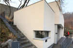
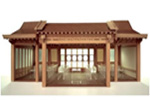
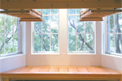
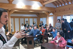

본문 컨텐츠 영역
Home > 아름지기 소식 > 언론보도
언론보도
아름지기는 조상 대대로 이어져온 문화유산이 다음세대로 이어지도록 더욱 노력하겠습니다.
| 번호 | 내용 | 언론매체 | 작성일 | 조회수 | |
|---|---|---|---|---|---|
| 목록보기글쓰기 | |||||
| 156 |  |
서촌 골목마다 숨어있는 문화예술 공간인왕산 아래 서촌에는 골목 구석구석 둘러볼 곳과 많은 이야기 거리들이 숨어있다. 조선의 화가 겸재 정선이 서촌에 살았었고, 근대의 시절 이름자를 알 만한 문화예술가들이 바로 인왕산 자락 아래 서촌에 머무르고 기거하며 살고... |
뉴스토마토 | 2015-12-13 | 247 |
| 155 |
“미국 대학에 한국문화의 전당 ‘명륜당’ 지었습니다”피츠버그대 ‘배움의 전당’은 1926년 건립된 163m 높이의 42층 건물로, 1787년 설립된 유서 깊은 명문 피츠버그대만이 아니라 도시 전체의 자부심이자 관광 명소다... |
한겨레 | 2015-12-07 | 427 | |
| 154 |  |
美 피츠버그대에 명륜당 본뜬 ‘한국실’ 개관미국 피츠버그대 ‘배움의 전당(Cathedral of Learning)’에 15일 또 하나의 명소가 탄생했다. 바로 ‘한국문화실’이다. 한국의 전통과 현대를 아우르는 한국문화실은 KF와 아름지기재단, 풍산그룹, 재미동포 등 시민사회가 힘을 합쳐 결실을 봤다... |
한국일보 | 2015-11-16 | 528 |
| 153 |  |
피츠버그대, 미국 땅에 둥지 튼 '성균관 명륜당'명륜당'이란 문패가 걸린 문을 열자 한옥 대문이 나온다. 둥근 원주 두 개가 당당하다. 건너편 마루 위 넉넉한 창문 너머로 바람에 흔들리는 나뭇가지가 보인다. 한걸음 내딛자 열 맞춰 들어찬 책상과 의자가 반들반들 빛난다... |
미주중앙일보 | 2015-11-30 | 423 |
| 152 |  |
[단독] 집 속에 집을 짓다,
|
중앙일보 | 2015-11-19 | 245 |